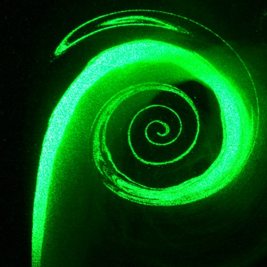
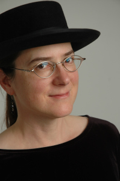

March 11, 2015
Prof. Jean Hertzberg (University of Colorado, Boulder)
From Flow Visualization to Beauty, Power, Destruction and Oddness
|  |
Abstract: Since 2003, the University of Colorado Boulder has offered a Flow Visualization (Flow Vis) course. It is cross-listed as a mechanical engineering elective and a fine arts studio course, and brings together mixed teams of engineering and fine arts photography or film students. It focuses on the production of aesthetically pleasing and scientifically useful images of fluid flows. Flow Vis students have responded enthusiastically, with exit survey comments such as “I’ll never ignore the sky again” or “I see examples of flow vis all the time now.” After attempts to replicate the Flow Vis pedagogy in the engineering design domain with limited success, an engineering education research (EER) program was undertaken, based on two prongs. 1) A neuropsychology approach studying whether students can acquire visual expertise in fluid mechanics, akin to the rapid visual processing |
of radiologists or dog show judges. 2) A mixed-methods sociocultural approach, including quantitative surveys of affect, qualitative interviews and analyses of student work. Both of these are works in progress, and preliminary results will be presented.Depending on the audience, the talk may shift into a discussion of aesthetics in fluid mechanics, specifically the aesthetics of beauty (laminar flow), power (aerospace applications), destruction (wildfires) and oddness (nonNewtonian fluid behavior). These aesthetics are proposed as a model for other aesthetics in STEM, with importance in the context of science communication.
|
Bio: Dr. Hertzberg is an Associate Professor of Mechanical Engineering at CU-Boulder. She teaches graduate and undergraduate courses in measurement techniques, thermodynamics, fluid mechanics, heat transfer, design and computer tools. She has pioneered a spectacular course on the art and physics of flow visualization, and is conducting research on the impact of the course with respect to visual perception and educational outcomes. Her disciplinary research centers around pulsatile, vortex dominated flows with applications in both combustion and bio-fluid dynamics. She is also interested in a variety of flow field measurement techniques. Current projects include electrospray atomization of jet fuel and velocity and vorticity in human cardiac ventricles and large vessels. |
 |